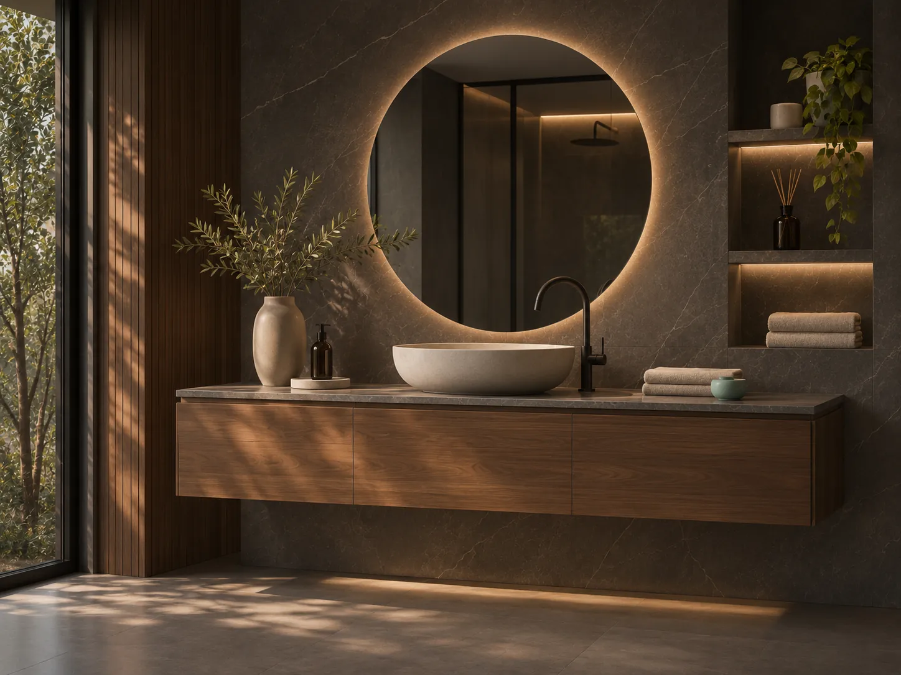
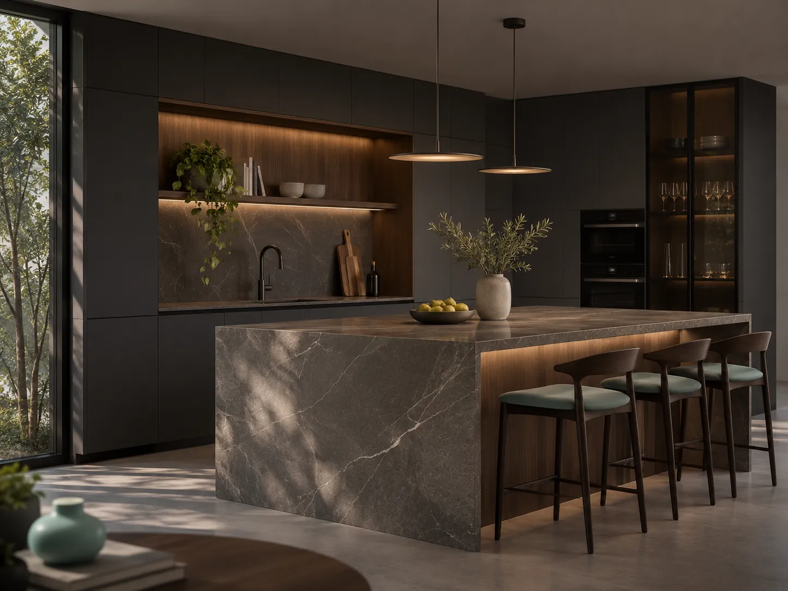
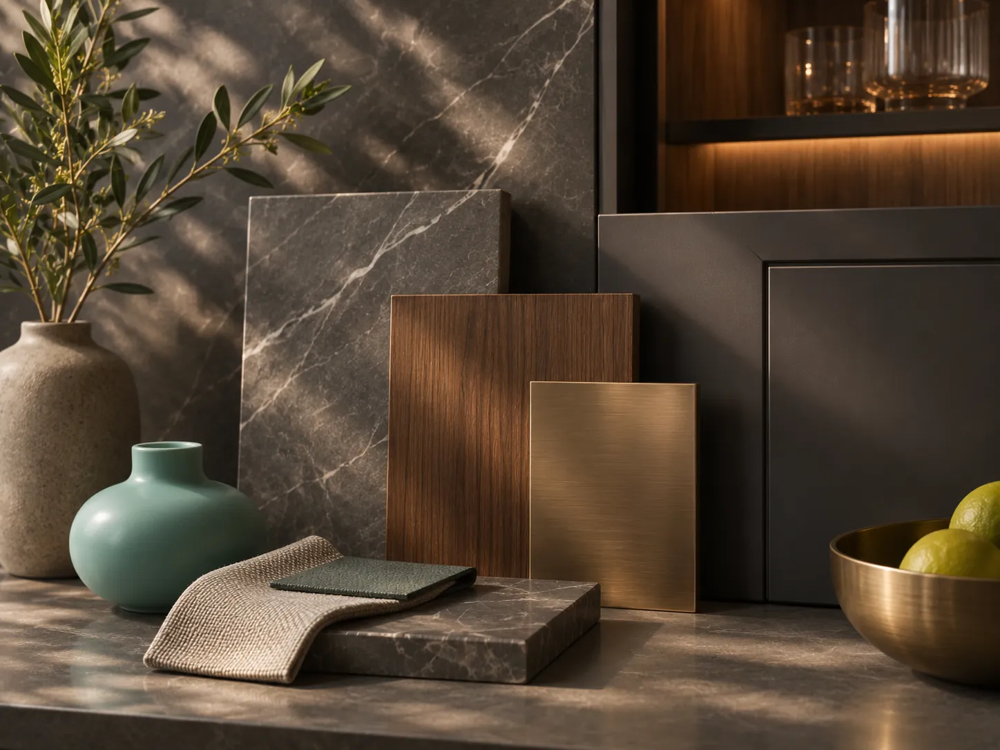
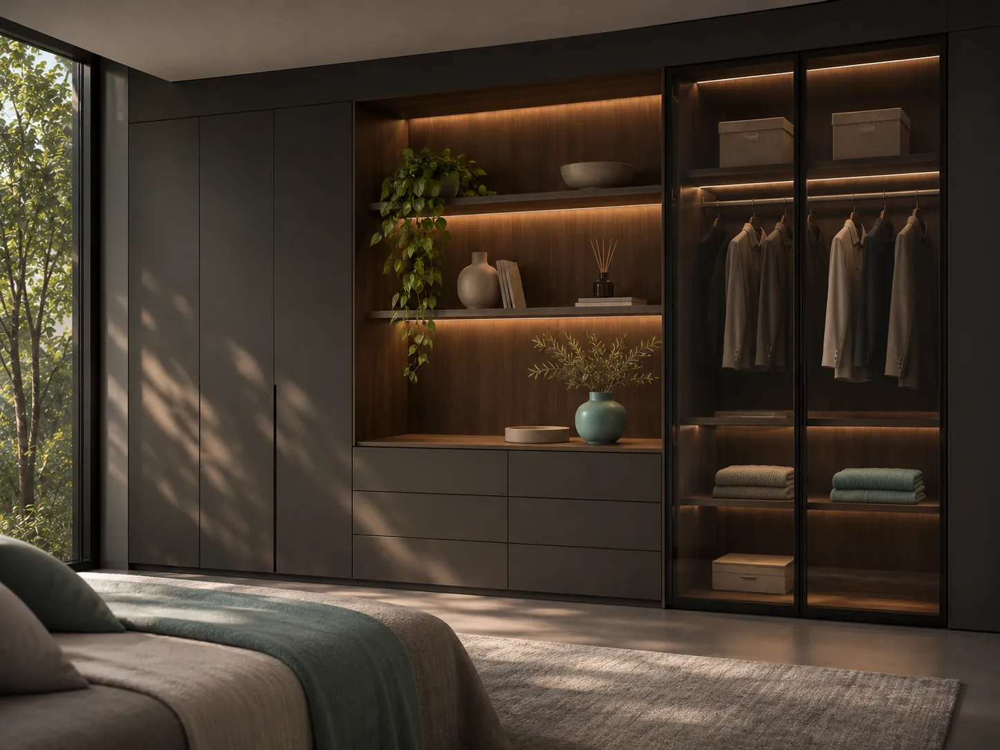
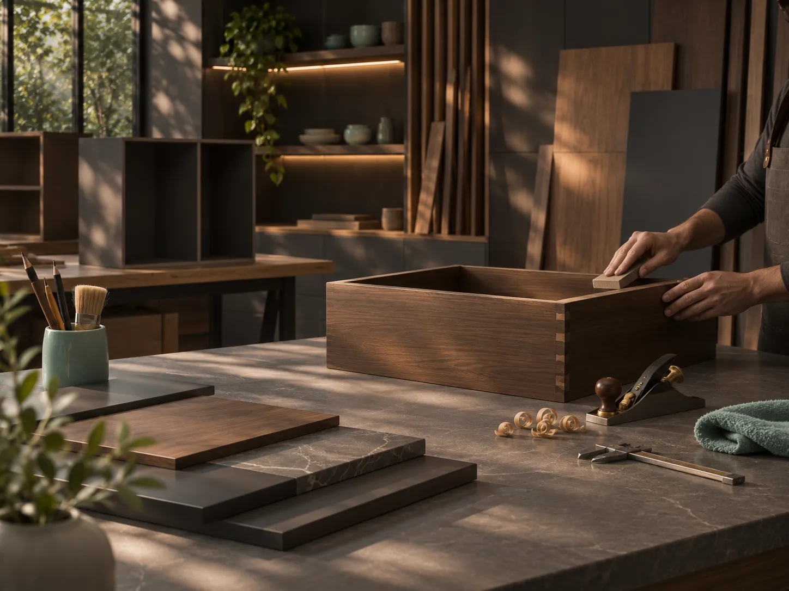

04 / Galería de inspiración
Ideas que merecen convertirse en espacios.
Explora referencias de cocinas, baños, materiales y acabados mientras construimos nuestro primer portafolio de proyectos reales.
Explora por categoría
Inspiración seleccionada.
Cocina contemporánea
Luz, textura y proporción.

Baño en equilibrio
Materiales que aportan calma.

Cocina en tonos piedra
Una mirada sobria y funcional.

El valor del detalle
Acabados y encuentros.

Almacenaje inteligente
Espacios que se aprovechan.

Oficio y detalle
Una mirada al proceso de fabricación.
Esta galería es conceptual. Las fotografías son ilustrativas y no deben interpretarse como trabajos ejecutados por la empresa. Cuando existan proyectos propios, se sustituirán por fotografías reales con sus fichas individuales.
Empecemos a imaginar
Hablemos de tu proyecto.
¿Una cocina nueva? ¿Un baño mejor aprovechado? Cuéntanos qué necesitas y qué tienes en mente.
Preparar mi consulta ↗